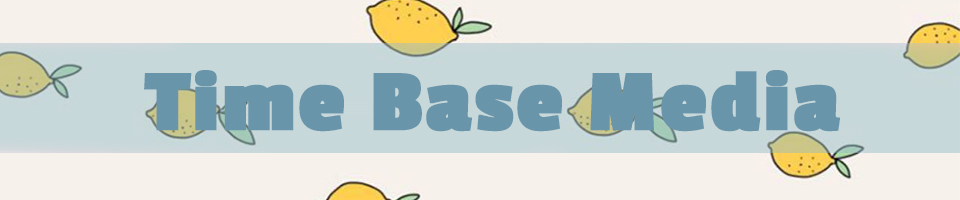

I spend the most of my time in animate than others. Animate takes a lot of steps and requires a lot of patience. It’s a bit difficult for me, I don’t like thi I feel that I am not good at this.s software. I don't have the patience to make an animated video. I feel that I am not good at this.